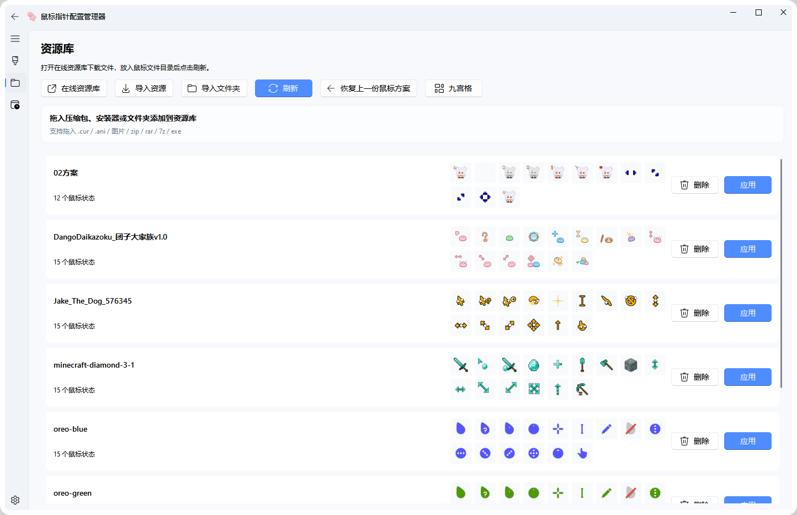

方案管理
新建、重命名、删除、导入和自动保存方案，避免重复整理资源。



功能特性
新建、重命名、删除、导入和自动保存方案，避免重复整理资源。
支持 `.cur`、`.ani`、图片、`.zip`、`.rar`、`.7z`、`.exe` 和文件夹。
静态与动态鼠标指针都能直接查看，便于在应用前确认细节。
用 `- / +` 与分段进度条查看方案适配范围，减少误触和试错。
可导出方案预览图，动态指针保存为 GIF，便于分享和留档。
支持自启动后台、托盘保留、隐藏任务栏与启动修复。
快速上手
从 GitHub Releases 下载绿色版程序，开箱可用。
把指针文件、资源包或文件夹直接拖进应用，程序自动解析。
在方案页分配各个状态，右侧实时查看显示效果。
一键写入系统鼠标方案，或直接生成安装程序交付使用。
参考